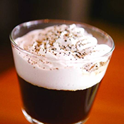

<!DOCTYPE html>
<html lang="en">
<head>
    <meta charset="UTF-8">
    <meta http-equiv="content-type" content="text/html">
    <meta name="keywords" content=""/>
    <meta name="description" content=""/>
    <meta name="format-detection" content="telephone=no"/>
    <meta name="apple-mobile-web-app-capable" content="yes"/>
    <meta name="apple-mobile-web-app-status-bar-style" content="black">
    <script>
        !function(e,t,i,r){function n(){var e=document.querySelector("head"),t=document.createElement("div");t.style.width="1rem",t.style.display="none",e.appendChild(t);var i=parseFloat(window.getComputedStyle(t,null).width);return e.removeChild(t),i}function a(){var r=d.getBoundingClientRect().width;r/c>768&&(r=768*c);var n=r/e*t;if(!i){var a=p/16;n/=a}d.style.fontSize=n+"px",v.rem=n}var m,o=window,l=o.document,d=l.documentElement,s=l.querySelector('meta[name="viewport"]'),c=0,u=0,p=n(),v={};if(s){var h=s.getAttribute("content").match(/initial\-scale=([\d\.]+)/);h&&(console.warn("将根据已有的meta标签来设置缩放比例"),u=parseFloat(h[1]),c=parseInt(1/u))}if(!c&&!u){var f=o.devicePixelRatio;r?(c=f>=3&&(!c||c>=3)?3:f>=2&&(!c||c>=2)?2:1,u=1/c):(c=1,u=1/c)}if(d.setAttribute("data-dpr",c),!s)if(s=l.createElement("meta"),s.setAttribute("name","viewport"),s.setAttribute("content","width=device-width, initial-scale="+u+", maximum-scale="+u+", minimum-scale="+u+", user-scalable=no"),d.firstElementChild)d.firstElementChild.appendChild(s);else{var w=l.createElement("div");w.appendChild(s),l.write(w.innerHTML)}o.addEventListener("resize",function(){clearTimeout(m),m=setTimeout(a,300)},!1),o.addEventListener("pageshow",function(e){e.persisted&&(clearTimeout(m),m=setTimeout(a,300))},!1),a(),v.dpr=c,v.refreshRem=a,v.rem2px=function(e){var t=parseFloat(e)*this.rem;return"string"==typeof e&&e.match(/rem$/)&&(t+="px"),t},v.px2rem=function(e){var t=parseFloat(e)/this.rem;return"string"==typeof e&&e.match(/px$/)&&(t+="rem"),t},window.remmoka=v}
        (750,100,!0,!0);
        /*
         * designWidth, oneRem2Px, resetScaleFontSizeToDefault, useScaleFix1pxTooBold
         * @param designWidth 设计稿宽度 一般来说iPhone6是750 如果缩小就变成了375px
         * @param oneRem2Px 1rem对应多少px
         * @param resetScaleFontSizeToDefault 是否重置Android因为系统放大或者缩小字体带来的影响
         * @param useScaleFix1pxTooBold 是否通过meta标签的scale处理1px过于粗的问题
         * */
    </script>
    <script type="text/javascript" src="./js/lib/jquery.min.js"></script>
    <script type="text/javascript" src="./js/lib/velocity.min.js"></script>
    <script type="text/javascript" src="./js/lib/handlebars-v4.0.10.js"></script>
    <script id="lists-template" type="text/x-handlebars-template">
        <ul>
            {{#each list}}
            <li>
                <a href="goodsHerfUrl">
                    <div class="liLeft">
                        <p class="liTitle">{{name}}<i class="liPrice"> /{{price}}元</i></p>
                        <p class="liText">{{intro}}</p>
                    </div>
                    
                </a>
                <div class="liWrap"></div>
                <input type="button" value="删除" class="delBtn">
                <input type="button" value="取消" class="cancelBtn">
            </li>
            {{/each}}
        </ul>
    </script>
    <link rel="stylesheet" type="text/css" href="./css/style.css">
    <title>收藏列表</title>
</head>
<body id="m-collectBody">
<div id="m-collectList">
    <!--<div id="listname"></div>-->
    <a href="perCenter.html">
        <div id="return">
            <i class="iconfont">&#xe602;</i>
        </div>
    </a>
    <div id="lists">
        <!--<ul>-->
        <!--<li>-->
        <!--<div class="liLeft">-->
        <!--<p class="liTitle">雪顶咖啡<i class="liPrice"> /28元</i></p>-->
        <!--<p class="liText">海岩咖啡是从卡布奇诺里衍生出来的,最起初是台湾某家咖啡店独创口味咖啡。 制作方式几乎与卡布奇诺相同。海岩咖啡是从卡布奇诺里衍生出来的,最起初是台湾某家咖啡店独创口味咖啡。</p>-->
        <!--</div>-->
        <!---->
        <!--</li>-->
        <!--<li>-->
        <!--<div class="liLeft">-->
        <!--<p class="liTitle">雪顶咖啡</p>-->
        <!--<p class="liText">海岩咖啡是从卡布奇诺里衍生出来的,最起初是台湾某家咖啡店独创口味咖啡。 制作方式几乎与卡布奇诺相同。海岩咖啡是从卡布奇诺里衍生出来的,最起初是台湾某家咖啡店独创口味咖啡。</p>-->
        <!--</div>-->
        <!---->

        <!--</li>-->
        <!--<li>-->
        <!--<div class="liLeft">-->
        <!--<p class="liTitle">雪顶咖啡</p>-->
        <!--<p class="liText">海岩咖啡是从卡布奇诺里衍生出来的,最起初是台湾某家咖啡店独创口味咖啡。 制作方式几乎与卡布奇诺相同。海岩咖啡是从卡布奇诺里衍生出来的,最起初是台湾某家咖啡店独创口味咖啡。</p>-->
        <!--</div>-->
        <!---->

        <!--</li>-->
        <!--</ul>-->
    </div>
    <div id="rollBack">
        
    </div>
</div>
</body>
<!--<script type="text/javascript" src="./js/lib/jquery.min.js"></script>-->
<script type="text/javascript" src="./js/module/collectList.js"></script>
</html>